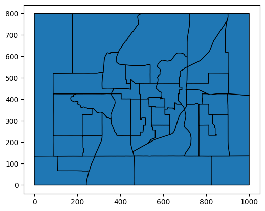

200: Exampville Simulated Data#
import geopandas as gpd
import pandas as pd
import larch as lx
lx.__version__
'6.0.23'
Welcome to Exampville, the best simulated town in this here part of the internet!
Exampville is provided with Larch to illustrate the kind of data that a transportation planner might have available when building a travel model. This data is almost entirely fictional.
from larch.examples import example_file
TAZ Shapefile#
The shapefile that includes a map of the travel analysis zones in Exampville is stored in a zip file.
Geopandas can open and read this data directly with unzipping it on disk first, by including the “zip://” protocol in front of the filename.
taz_shape = gpd.read_file("zip://" + example_file("exampville_taz.zip"))
taz_shape.plot(edgecolor="k");

TAZ Employment Data#
emp = pd.read_csv(example_file("exampville_employment.csv.gz"), index_col="TAZ")
emp.info()
<class 'pandas.core.frame.DataFrame'>
Index: 40 entries, 1 to 40
Data columns (total 3 columns):
# Column Non-Null Count Dtype
--- ------ -------------- -----
0 NONRETAIL_EMP 40 non-null int64
1 RETAIL_EMP 40 non-null int64
2 TOTAL_EMP 40 non-null int64
dtypes: int64(3)
memory usage: 1.2 KB
emp.head()
| NONRETAIL_EMP | RETAIL_EMP | TOTAL_EMP | |
|---|---|---|---|
| TAZ | |||
| 1 | 118 | 340 | 458 |
| 2 | 91 | 0 | 91 |
| 3 | 197 | 2 | 199 |
| 4 | 277 | 8 | 285 |
| 5 | 44 | 13 | 57 |
Skims#
The network skims for Exampville are stored in open matrix format. Larch includes a OMX reader, which also embeds a number of handy tools for processing OMX data into formats useful for discrete choice analysis.
from larch.omx import OMX
skims = OMX(example_file("exampville_skims.omx"), mode="r")
skims
<larch.OMX> ⋯/exampville_skims.omx
| shape:(np.int64(40), np.int64(40))
| data:
| AUTO_COST (float64)
| AUTO_DIST (float64)
| AUTO_TIME (float64)
| BIKE_TIME (float64)
| TRANSIT_FARE (float64)
| TRANSIT_IVTT (float64)
| TRANSIT_OVTT (float64)
| WALK_DIST (float64)
| WALK_TIME (float64)
| lookup:
| TAZ_AREA_TYPE (40 |S3)
| TAZ_ID (40 int64)
Households#
hh = pd.read_csv(example_file("exampville_households.csv.gz"))
hh.info()
<class 'pandas.core.frame.DataFrame'>
RangeIndex: 5000 entries, 0 to 4999
Data columns (total 13 columns):
# Column Non-Null Count Dtype
--- ------ -------------- -----
0 X 5000 non-null float64
1 Y 5000 non-null float64
2 INCOME 5000 non-null float64
3 N_VEHICLES 5000 non-null int64
4 HHSIZE 5000 non-null int64
5 geometry 5000 non-null object
6 HOMETAZ 5000 non-null int64
7 HHID 5000 non-null int64
8 N_TRIPS 5000 non-null int64
9 N_TRIPS_HBW 5000 non-null int64
10 N_TRIPS_HBO 5000 non-null int64
11 N_TRIPS_NHB 5000 non-null int64
12 N_WORKERS 5000 non-null int64
dtypes: float64(3), int64(9), object(1)
memory usage: 507.9+ KB
hh.head()
| X | Y | INCOME | N_VEHICLES | HHSIZE | geometry | HOMETAZ | HHID | N_TRIPS | N_TRIPS_HBW | N_TRIPS_HBO | N_TRIPS_NHB | N_WORKERS | |
|---|---|---|---|---|---|---|---|---|---|---|---|---|---|
| 0 | 361.35 | 33.34 | 6026.0 | 1 | 4 | POINT (361.35 33.34) | 22 | 50000 | 15 | 6 | 8 | 1 | 3 |
| 1 | 272.08 | 30.77 | 30538.0 | 0 | 1 | POINT (272.08 30.77) | 22 | 50001 | 4 | 1 | 1 | 2 | 1 |
| 2 | 424.18 | 72.55 | 24131.0 | 1 | 1 | POINT (424.18 72.55) | 22 | 50002 | 6 | 0 | 4 | 2 | 0 |
| 3 | 464.48 | 61.30 | 34838.0 | 1 | 2 | POINT (464.48 61.3) | 22 | 50003 | 16 | 3 | 7 | 6 | 2 |
| 4 | 328.95 | 129.36 | 29337.0 | 0 | 1 | POINT (328.95 129.36) | 22 | 50004 | 0 | 0 | 0 | 0 | 0 |
Persons#
pp = pd.read_csv(example_file("exampville_persons.csv.gz"))
pp.info()
<class 'pandas.core.frame.DataFrame'>
RangeIndex: 12349 entries, 0 to 12348
Data columns (total 12 columns):
# Column Non-Null Count Dtype
--- ------ -------------- -----
0 PERSONID 12349 non-null int64
1 HHID 12349 non-null int64
2 HHIDX 12349 non-null int64
3 AGE 12349 non-null int64
4 WORKS 12349 non-null int64
5 N_WORK_TOURS 12349 non-null int64
6 N_OTHER_TOURS 12349 non-null int64
7 N_TOURS 12349 non-null int64
8 N_TRIPS 12349 non-null int64
9 N_TRIPS_HBW 12349 non-null int64
10 N_TRIPS_HBO 12349 non-null int64
11 N_TRIPS_NHB 12349 non-null int64
dtypes: int64(12)
memory usage: 1.1 MB
pp.head()
| PERSONID | HHID | HHIDX | AGE | WORKS | N_WORK_TOURS | N_OTHER_TOURS | N_TOURS | N_TRIPS | N_TRIPS_HBW | N_TRIPS_HBO | N_TRIPS_NHB | |
|---|---|---|---|---|---|---|---|---|---|---|---|---|
| 0 | 60000 | 50000 | 0 | 33 | 1 | 1 | 0 | 1 | 2 | 2 | 0 | 0 |
| 1 | 60001 | 50000 | 0 | 27 | 1 | 1 | 1 | 2 | 4 | 2 | 2 | 0 |
| 2 | 60002 | 50000 | 0 | 31 | 1 | 1 | 1 | 2 | 5 | 2 | 2 | 1 |
| 3 | 60003 | 50000 | 0 | 81 | 0 | 0 | 2 | 2 | 4 | 0 | 4 | 0 |
| 4 | 60004 | 50001 | 1 | 39 | 1 | 1 | 0 | 1 | 4 | 1 | 1 | 2 |
Tours#
tour = pd.read_csv(example_file("exampville_tours.csv.gz"))
tour.info()
<class 'pandas.core.frame.DataFrame'>
RangeIndex: 20739 entries, 0 to 20738
Data columns (total 11 columns):
# Column Non-Null Count Dtype
--- ------ -------------- -----
0 TOURID 20739 non-null int64
1 HHID 20739 non-null int64
2 PERSONID 20739 non-null int64
3 DTAZ 20739 non-null int64
4 TOURMODE 20739 non-null int64
5 TOURPURP 20739 non-null int64
6 N_STOPS 20739 non-null int64
7 N_TRIPS 20739 non-null int64
8 N_TRIPS_HBW 20739 non-null int64
9 N_TRIPS_HBO 20739 non-null int64
10 N_TRIPS_NHB 20739 non-null int64
dtypes: int64(11)
memory usage: 1.7 MB
tour.head()
| TOURID | HHID | PERSONID | DTAZ | TOURMODE | TOURPURP | N_STOPS | N_TRIPS | N_TRIPS_HBW | N_TRIPS_HBO | N_TRIPS_NHB | |
|---|---|---|---|---|---|---|---|---|---|---|---|
| 0 | 0 | 50000 | 60000 | 22 | 1 | 1 | 0 | 2 | 2 | 0 | 0 |
| 1 | 1 | 50000 | 60001 | 4 | 1 | 1 | 0 | 2 | 2 | 0 | 0 |
| 2 | 2 | 50000 | 60001 | 10 | 2 | 2 | 0 | 2 | 0 | 2 | 0 |
| 3 | 3 | 50000 | 60002 | 20 | 1 | 1 | 0 | 2 | 2 | 0 | 0 |
| 4 | 4 | 50000 | 60002 | 20 | 1 | 2 | 1 | 3 | 0 | 2 | 1 |